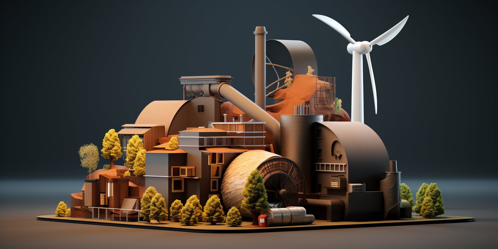

Biomass needed
To generate 1 megawatt (MW) of electricity per hour from biomass requires approximately 1,000 kilograms (or 1 metric ton) of biomass fuel.
Here's a breakdown of the math:
- 1 MW of power = 1,000,000 watts
- With a typical biomass power plant electrical efficiency of around 25%, it takes 4 units of fuel energy to generate 1 unit of electrical energy.
- The energy content of biomass fuels varies by source, but a typical value is about 18 GJ per metric ton (at 10% moisture content).
- So to generate 1 MW of power for 1 hour requires:
1,000,000 W x 1 hr = 1,000,000 Wh = 3,600,000 kJ
At 25% efficiency, the fuel energy required is: 3,600,000 kJ / 0.25 = 14,400,000 kJ
With biomass containing 18 GJ/ton = 18,000 kJ/kg
The biomass fuel required is: 14,400,000 kJ / 18,000 kJ/kg = 800 kg, or approximately 1 metric ton.
So in summary, generating 1 MW of power from biomass for 1 hour requires burning approximately 1 ton of biomass fuel. The actual amount can vary slightly based on the biomass source and moisture content.
Cost per KWH
Here is the cost per kWh breakdown for a 1 MW biomass power plant, with the numbers formatted more clearly:
Assumptions:
- 1 MW capacity
- 90% capacity factor
- 7,884 MWh annual generation
- $3,000,000 capital cost
- 10% interest rate on capital
Biomass Cost: $20/tonne
- Annual biomass fuel cost: 7,884 tonnes x $20/tonne = $157,680
- Fixed O&M cost: $300,000
- Variable O&M cost: 7,884 MWh x $0.02/kWh = $157,680
- Annual capital cost:
10% of $3,000,000 = $300,000 - Total annual cost = $915,360
- Cost per kWh = Total annual cost / Annual generation = $915,360 / 7,884 MWh = $0.116 per kWh
Biomass Cost: $100/tonne
- Annual biomass fuel cost: 7,884 tonnes x $100/tonne = $788,400
- Fixed O&M cost: $300,000
- Variable O&M cost: $157,680
- Annual capital cost: $300,000
- Total annual cost = $1,546,080
- Cost per kWh = Total annual cost / Annual generation = $1,546,080 / 7,884 MWh = $0.196 per kWh
Hemp as Biomass
The energy content of industrial hemp is equivalent to that of woody biomass, approximately 7,247 BTUs / pound or 16.9 megajoules / kilogram.
Hemp grows fast and is capable of absorbing 22 tonnes of CO2 per hectare under the right conditions. In some regions it is possible to produce 3 crops per year.
In one season a hectare of healthy soil can produce as much as 12 tonnes of hemp biomass with an energy equivalent of approximately 202,800 megajoules (192,217,312 BTUs) or 56,333.33 kilowatt hours.
An EPL with a 10 hectare hemp TBR would generate 281,666 kilowatt hours and sequester 220 tonnes of carbon dioxide.
Conclusion Per Season
- 220 tonnes of CO2 = 220*60 USD = 13200 USD
- 281 MW = 0.2 * 1000 * 281 = 56000 USD (if cost of energy is put on 0.2)
If 3x per year
- Need 1/(281*3/24/30/12) times the size = 10x = 100 hectares per MW continuous
- For 5 MW = 500 hectares = 5km2
Cost to produce Hemp Biomass
Here's an estimate on the cost to produce 1 metric tonne of hemp biomass:
- Hemp yields average around 8,000 kg/ha (around 3.5 tons/acre)
- Input costs for hemp production:
- Seeds: $500/ha
- Fertilizer: $150/ha
- Equipment, labor, other overhead: $800/ha
- Total input costs per hectare: $1,450
- For a yield of 8,000 kg/ha:
- Input cost per kg hemp = $1,450 / 8,000 kg = $0.18
- So input cost per metric tonne (1,000 kg) hemp = $180
- Additional harvesting/transport costs estimated around $30/tonne
- Total production cost = $180 + $30 = $210 per metric tonne
So in summary, current industry estimates put the total cost to produce 1 metric tonne of hemp biomass at around $210. This can vary based on yields, farming practices, and equipment/labor costs. But overall, hemp provides a relatively low-cost biomass feedstock for energy production.
If fertilizer cost is $0 and overhead is $400 per hectare then 1 metric tonne of hemp biomass:
- Hemp yields average around 8,000 kg/ha
- Input costs for hemp production:
- Seeds: $500/ha
- Fertilizer: $0
- Overhead: $400/ha
- Total input costs per hectare: $500 + $0 + $400 = $900
- For a yield of 8,000 kg/ha:
- Input cost per kg hemp = $900 / 8,000 kg = $0.113
- So input cost per metric tonne (1,000 kg) hemp = $113
- Additional harvesting/transport costs estimated around $30/tonne
- Total production cost = $113 + $30 = $143 per metric tonne
With zero fertilizer cost and $400/ha overhead, the total estimated cost to produce 1 metric tonne of hemp biomass is approximately $143.
Other Biomass Sources
Here is an overview of some of the most cost-effective options for farming biomass to be used for electricity production:
- Short rotation woody crops like willow or poplar:
- Yield up to 8 dry tonnes/ha/year
- Require low inputs like fertilizer
- Cost around $50-60/dry tonne
- Perennial grasses like switchgrass or miscanthus:
- Yield up to 20 dry tonnes/ha/year
- Low input costs, well-suited to marginal land
- Cost around $40-60/dry tonne
- Agricultural residues like straw and corn stover:
- Already produced as byproducts of food crops
- Cost just $20-40/dry tonne
- Lower yields than dedicated energy crops
- Fast growing trees like eucalyptus:
- Yield 10-40 dry tonnes/ha/year depending on climate
- Cost around $40-50/dry tonne
- Hemp:
- Yields around 8 dry tonnes/ha/year
- Low input costs
- Cost around $100-150/dry tonne
The lowest cost options are agricultural residues, but availability may be limited. Perennial grasses like switchgrass provide a good combination of high yields and low costs.
Overall, the optimal feedstock depends on local climate, land availability, and production costs. But several options can provide biomass at costs competitive with other fuel sources.